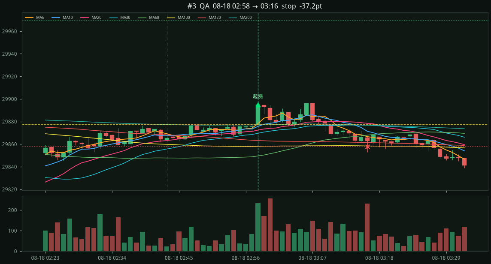
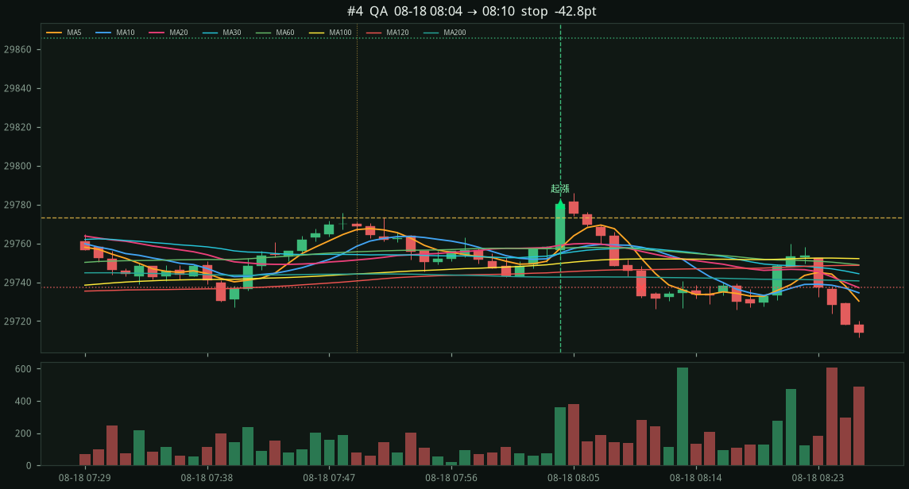
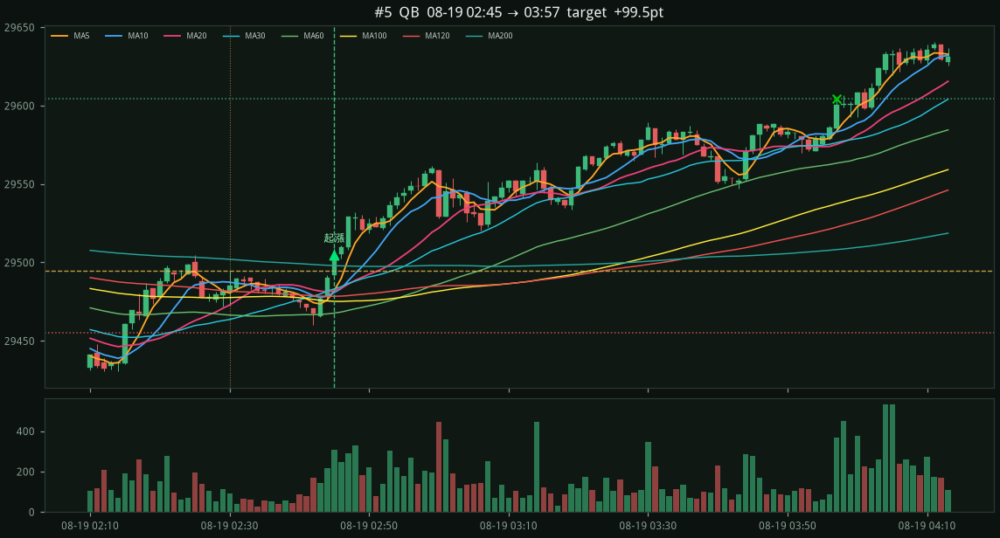
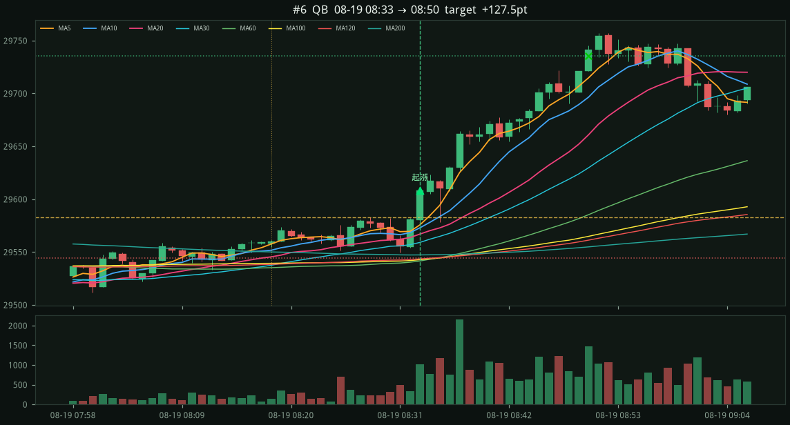
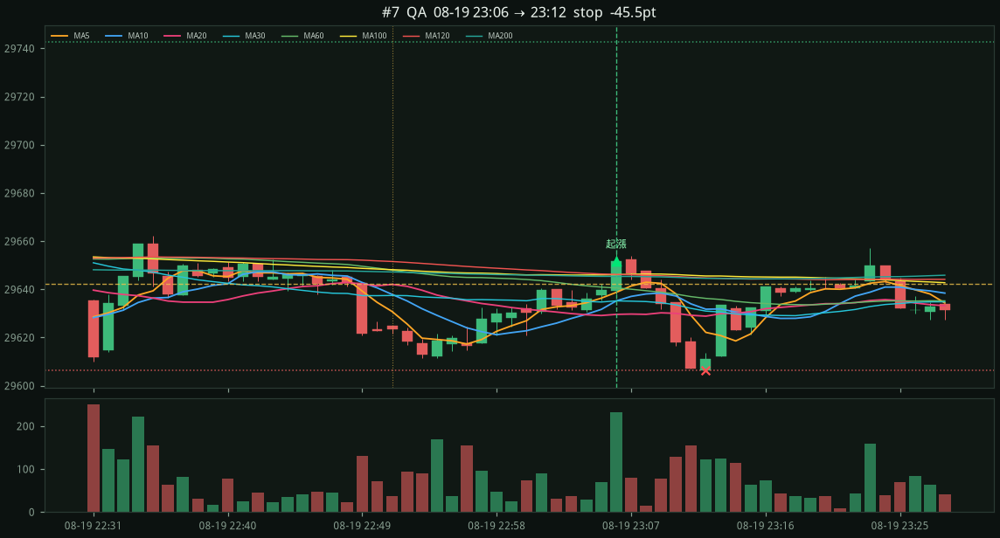
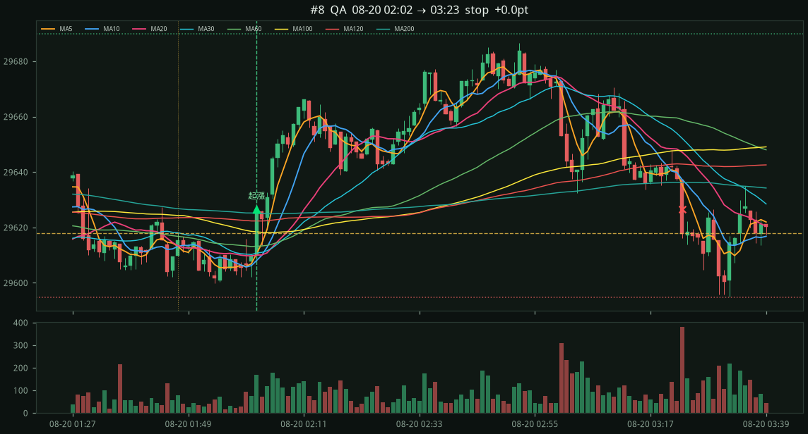
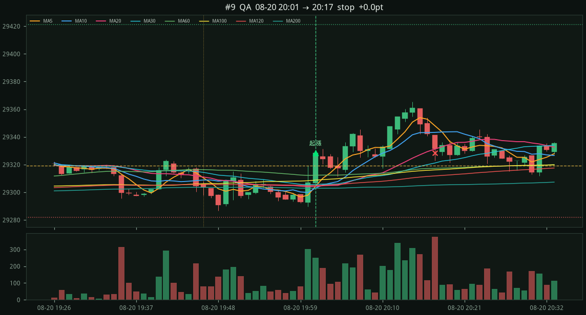
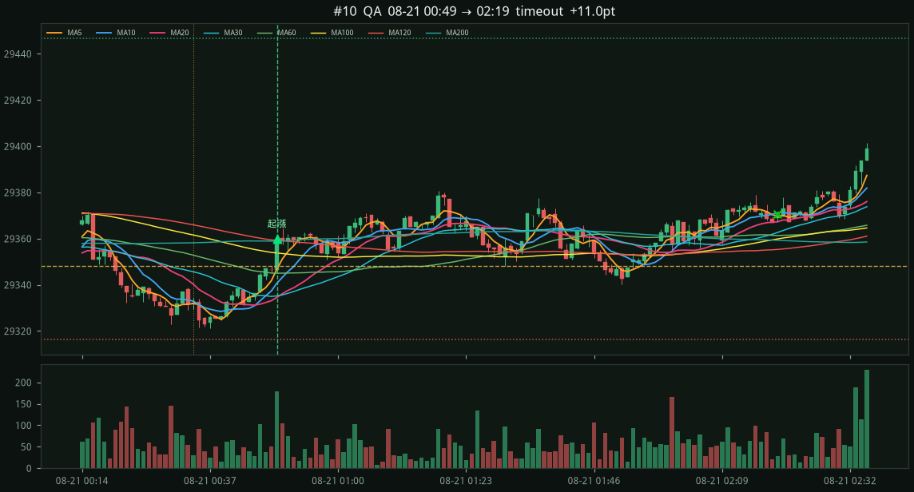
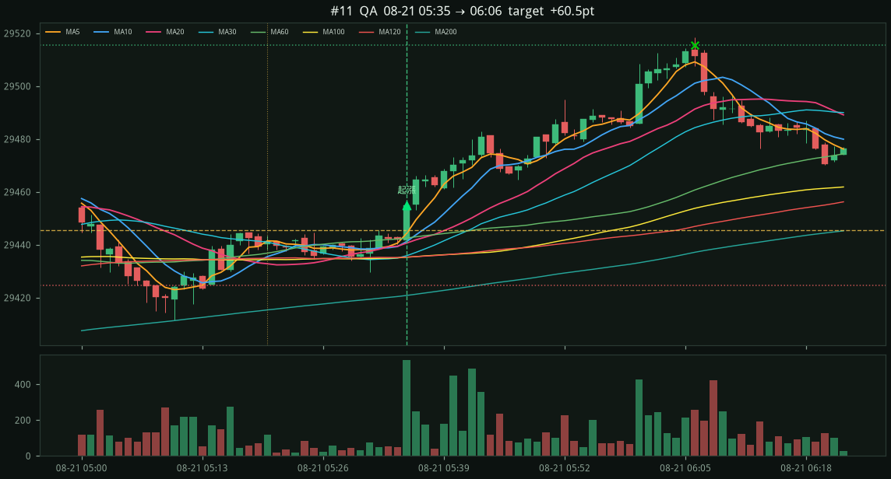
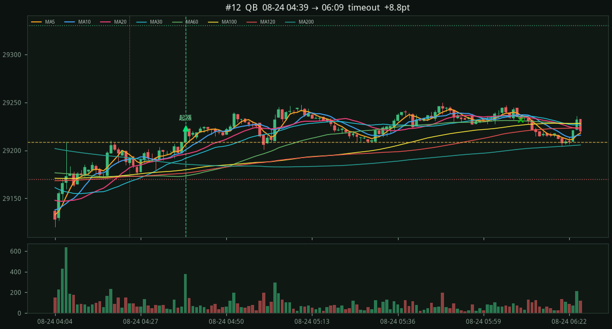

#1 · QA2026-08-16 22:21 → 08-16 23:51
+27.2 pts
entry 30214.50 stop 30180.75 (−33.8 pts) target 30282.00 (2.0R) exit 30241.75 timeout 盤整 30185.75–30205.00 區間 19.2 帶寬 10.7 量能 11.37x 實體 12.0 前回檔 53.8

圖是靜態 1m K 線。手機請往下捲。
8d · 2026-08-16 18:10 → 2026-08-24 08:28 · bars=7707 · MA 5, 10, 20, 30, 60, 100, 120, 200
QA 9筆 -78.0 · QB 3筆 +235.8
漏斗：檢查 6979 → 盤整區間 3372 → 均線糾結 1772 → 前回檔 1770 → 收斂 1713 → MA200走平 1713 → 吻均線 1713 → 長實體 47 → 站上盤整 17 → 站上均線 17 → 放量 12 → 進場 12
entry 30214.50 stop 30180.75 (−33.8 pts) target 30282.00 (2.0R) exit 30241.75 timeout 盤整 30185.75–30205.00 區間 19.2 帶寬 10.7 量能 11.37x 實體 12.0 前回檔 53.8
entry 30338.00 stop 30274.00 (−64.0 pts) target 30466.00 (2.0R) exit 30286.75 timeout 盤整 30279.00–30303.25 區間 24.2 帶寬 10.4 量能 24.99x 實體 52.5 前回檔 51.8

entry 29895.00 stop 29857.75 (−37.2 pts) target 29969.50 (2.0R) exit 29857.75 stop 盤整 29862.75–29877.75 區間 15.0 帶寬 28.2 量能 2.15x 實體 18.2 前回檔 141.2

entry 29780.25 stop 29737.50 (−42.8 pts) target 29865.75 (2.0R) exit 29737.50 stop 盤整 29742.50–29773.50 區間 31.0 帶寬 15.2 量能 3.69x 實體 23.5 前回檔 88.5

entry 29504.75 stop 29455.00 (−49.8 pts) target 29604.25 (2.0R) exit 29604.25 target 盤整 29460.00–29494.50 區間 34.5 帶寬 31.0 量能 2.96x 實體 13.0 前回檔 110.0

entry 29608.00 stop 29544.25 (−63.8 pts) target 29735.50 (2.0R) exit 29735.50 target 盤整 29549.25–29583.00 區間 33.8 帶寬 29.1 量能 7.48x 實體 28.0 前回檔 76.2

entry 29651.75 stop 29606.25 (−45.5 pts) target 29742.75 (2.0R) exit 29606.25 stop 盤整 29611.25–29642.25 區間 31.0 帶寬 17.2 量能 3.43x 實體 12.2 前回檔 74.2

entry 29626.50 stop 29594.75 (−31.8 pts) target 29690.00 (2.0R) exit 29626.50 stop 盤整 29599.75–29618.00 區間 18.2 帶寬 19.0 量能 3.05x 實體 16.5 前回檔 68.2

entry 29328.25 stop 29281.75 (−46.5 pts) target 29421.25 (2.0R) exit 29328.25 stop 盤整 29286.75–29319.25 區間 32.5 帶寬 14.3 量能 5.79x 實體 21.5 前回檔 71.5

entry 29359.75 stop 29316.25 (−43.5 pts) target 29446.75 (2.0R) exit 29370.75 timeout 盤整 29321.25–29348.25 區間 27.0 帶寬 26.4 量能 3.20x 實體 13.2 前回檔 78.0

entry 29455.00 stop 29424.75 (−30.2 pts) target 29515.50 (2.0R) exit 29515.50 target 盤整 29429.75–29445.50 區間 15.8 帶寬 21.8 量能 5.93x 實體 13.2 前回檔 77.0

entry 29223.25 stop 29169.75 (−53.5 pts) target 29330.25 (2.0R) exit 29232.00 timeout 盤整 29174.75–29208.50 區間 33.8 帶寬 27.7 量能 3.94x 實體 14.5 前回檔 95.8
